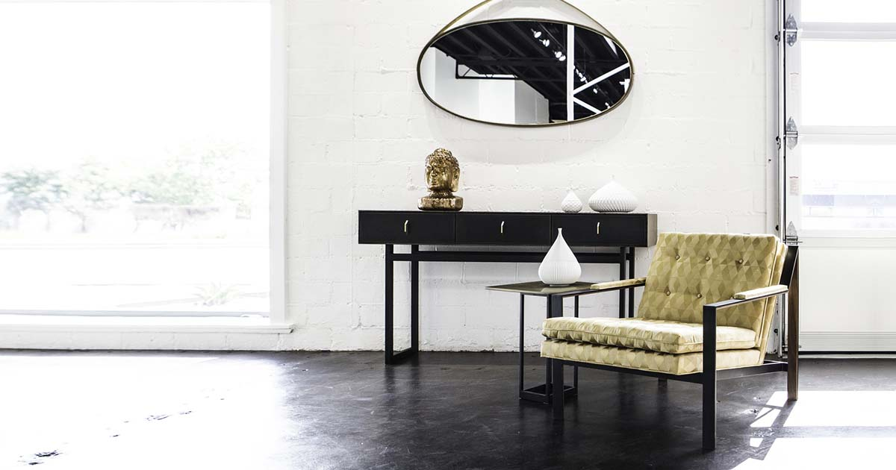
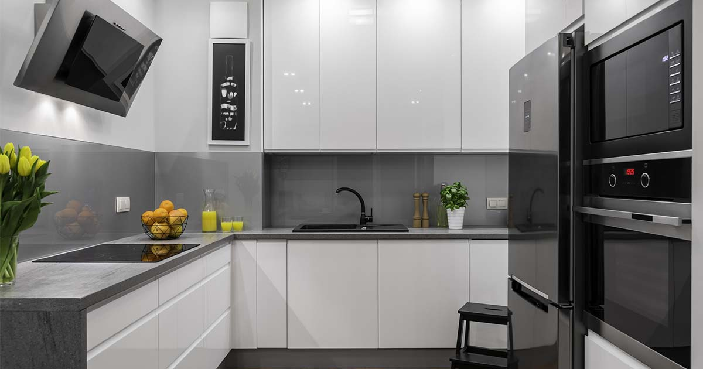
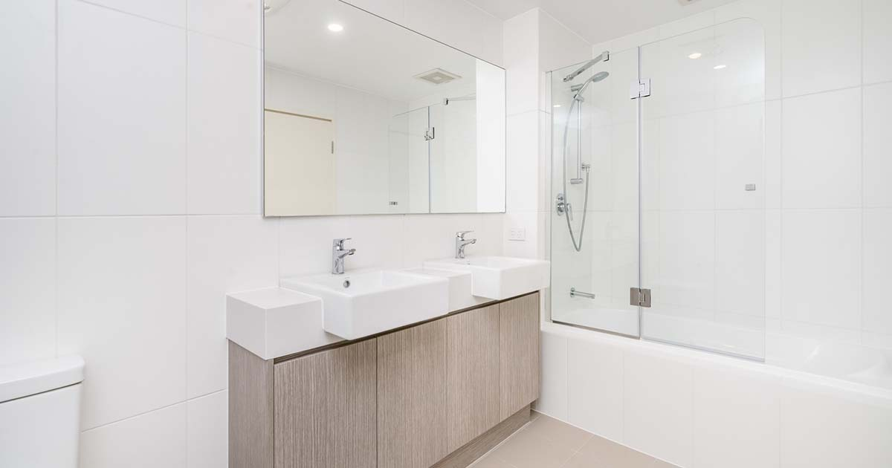
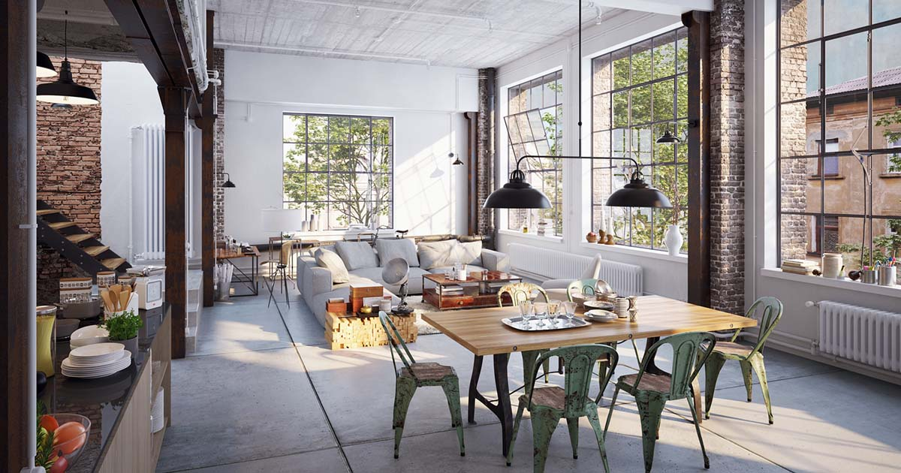
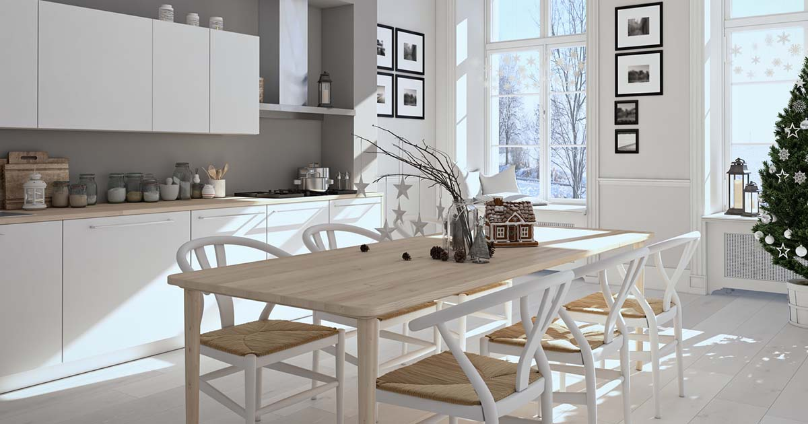
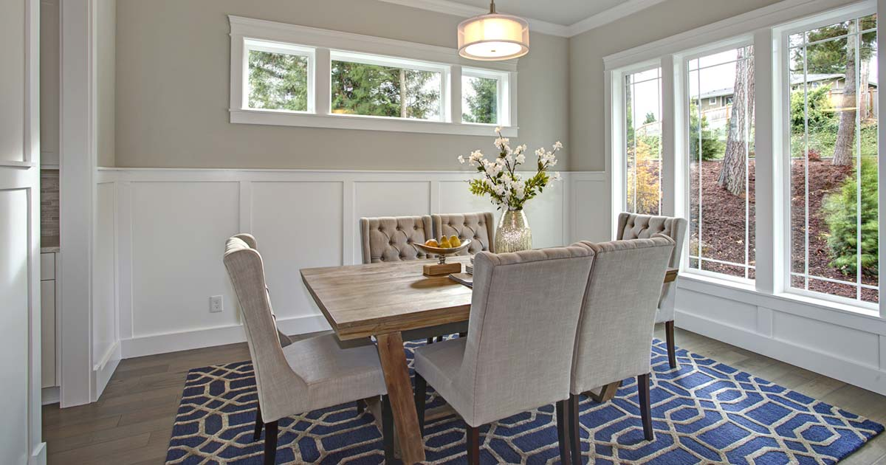
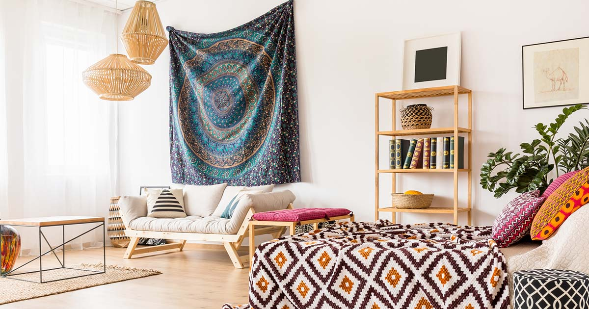

Choisissez votre style...
Style moderne
Le style moderne est issu du mouvement moderniste, qui a vu le jour dans les années 1920. Il ne faut pas le confondre avec l’adjectif « moderne », qui fait référence aux tendances actuelles. Il est aussi différent du style contemporain qui se réfère aux tendances actuelles du design. Le style de design moderne est très spécifique et aurait été créé par le célèbre architecte germano-américain Ludwig Mies van der Rohe. Matériaux principaux : bois, métal, verre, acier Palette de couleurs : Monochromatique, neutre, terre Style de mobilier : simple, pieds exposés, surélevé, finitions satinées Caractéristiques distinctives : lignes claires, mobilier simple, absence d’encombrements et d’ornements, « la forme suit la fonction »
Style contemporain
Le style contemporain ne doit pas être confondu avec le style moderne. Si votre client veut une maison contemporaine, cela signifie qu’il s’inscrit dans les tendances actuelles du design. Il ne s’agit pas d’une tendance statique, mais plutôt d’une tendance évolutive, qui s’adapte à l’époque actuelle. Le style contemporain repose généralement sur la simplicité, la sophistication et la pureté des lignes. Il est épuré, élégant et lumineux. Matériaux principaux : bois léger, verre, acier inoxydable Palette de couleurs : marron, taupe, crème, blanc, noir Style de mobilier : pieds exposés, tons neutres, fibres naturelles, impressions bicolores, pas de contours ni de tissus superflus Caractéristiques distinctives : espace ouvert, non encombré, aéré, accent sur la ligne et la forme
Style minimaliste
Le style de design minimaliste découle de la théorie « moins, c’est plus ». Il y a moins de meubles, moins d’encombrement, moins d’accessoires. Même les éléments utilisés sont minimalistes dans la mesure où ils sont aérés et entourés d’un espace vide. Si votre client est adepte du style minimaliste, vous allez devoir travailler avec des espaces ouverts, peu de meubles et beaucoup de blanc. Matériaux principaux : verre, bois, marbre, béton, métal Palette de couleurs : monochromatique, blanc, noir, gris Style de mobilier : formes épurées, fonctionnel, simple, couleurs sobres Caractéristiques distinctives : lignes épurées, sans encombrement, absence d’ornementation, calme, spacieux, aéré, beaucoup de lumière
Style industriel
Le style industriel s’inspire s’inspire de l’âge industriel, où la machine, le métal et la brique prédominaient. De nos jours, il célèbre les matériaux bruts et exposés d’un bâtiment. Il n’est cependant pas réservé aux personnes qui vivent dans des lofts ; n’importe quel espace peut être transformé en une maison de style industriel avec la palette de couleurs, les matériaux et le mobilier appropriés. Matériaux principaux : bois patiné, métal, brique, béton Palette de couleurs : tons neutres – marron, brun, noir, crème, gris Style de mobilier : mélange de bois et de métal, aspect vintage/antique, patiné, fonctionnel Caractéristiques distinctives : concept ouvert, hauts plafonds, matériaux exposés, épuré, fonctionnel, mélange d’ancien et de nouveau, espace négatif
Style scandinave
Le style scandinave vient des pays nordiques. Il met l’accent sur la lumière naturelle et artificielle pour créer un espace lumineux et soigné. Le design scandinave présente de nombreuses similitudes avec le design minimaliste, où la fonctionnalité, la simplicité et la pureté des lignes règnent en maître. Matériaux principaux : bois, plastique, métal Palette de couleurs : blanc, noir, gris, marron Style de mobilier : fonctionnel, simple, fibres naturelles, lignes épurées, bords lisses et arrondis, teintes naturelles Caractéristiques distinctives : spacieux, peu d’accessoires, lumière naturelle, planchers légers, sans encombrement, minimaliste
Style transitionnel
Le style transitionnel est un mélange de traditionnel et de contemporain. Il offre le meilleur des deux mondes en alliant confort et élégance. Ce style met l’accent sur la texture et le matériau plutôt que sur la couleur. Matériaux principaux : bois, verre, laque, acier, miroir Palette de couleurs : neutres – marron, taupe, brun, crème, gris Style de mobilier : courbes combinées à des lignes droites, finitions laquées, tissus modernes, imprimés et motifs subtils Caractéristiques distinctives : ornements légers, lignes épurées, accueillant, mur dominant, couleurs neutres
Style bohême
Le style bohème convient aux personnes qui adoptent un style de vie hors des convetions et qui aiment les couleurs vives, les meubles vintages et superposer les matériaux. Ce style est un mélange de beauté, de chaos et de culture. Il permet au propriétaire d’exprimer son individualité et intègre souvent des accessoires provenant de voyages ou de marchés aux puces. Ce style de design d’intérieur s’illustre par une forme ordonnée d’encombrement. Matériaux principaux : bois, métal, textiles teints Palette de couleurs : marron, vert, métallisé, doré, violet, orange, bleu Style de mobilier : occasion/vintage, feutré, couleurs saturées, poufs, dépareillé, confortable Caractéristiques distinctives : coloré, couches, textures et motifs variés, vintage, tapisseries, encombré
Style rustique
Le style rustique consiste à apporter des éléments naturels dans une maison. Ce style est souvent utilisé pour les chalets mais il est de plus en plus populaire auprès des citadins. Le style rustique incorpore des accessoires extérieurs tels que des branches, des bûches et du bois de récupération. Matériaux principaux : bois, pierre, textures organiques Palette de couleurs : marron, vert, doré, gris, beige Style de mobilier : bois vieilli/brut, cuir, bords rugueux Caractéristiques distinctives : poutres en bois, cheminée en pierre/mur d’ambiance, couleurs chaudes, matériaux naturels, comptoirs et meubles en bois, finitions usées